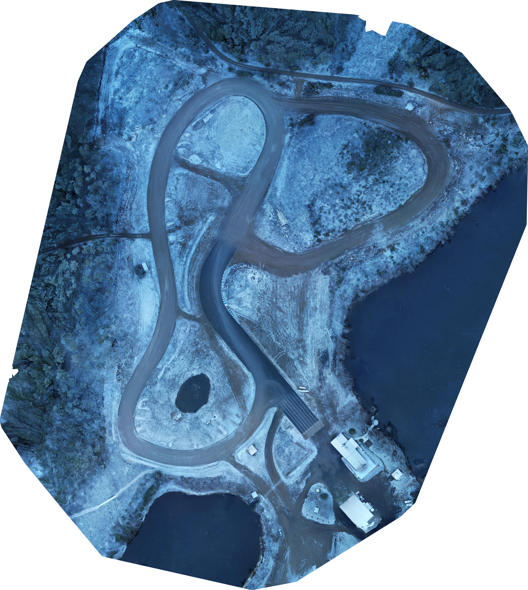

Rata kuvattiin dronella kahdella lennolla ja kuvista laskettiin koko alueen 3D-malli ja tarkka ilmakuva. Mallia voi pyöritellä suoraan tässä.

Ortokuva on oikaistu ilmakuva: mittakaava on sama joka kohdassa, kuten kartassa. Tällä sivulla noin 9 cm/pikseli, alkuperäinen 5 cm/pikseli.
| Drone | DJI Air 2 |
|---|---|
| Lennot | 2 ristikkolentoa, toinen käännetty 45° |
| Lento 1 | 60 m, kamera 70° alaspäin |
| Lento 2 | 50 m, kamera 60° alaspäin |
| Kuvien päällekkäisyys | 80 % |
| Kuvaussuunnat | 8 suuntaa, 45° välein |
| Kuvia | 498 |
| Laskenta | WebODM, 4 h 2 min |
| Kuvattu alue | noin 375 × 420 m |
| Ilmakuvan tarkkuus | 5 cm/pikseli |
Mallista on tarkoitus tehdä rata Assetto Corsa -ajosimulaattoriin, jolloin rataa voi ajaa myös virtuaalisesti.
Mallin pinnanmuodot ja ilmakuva toimivat pohjana: ajopinta mallinnetaan niiden päälle siistiksi, ja ympäristö saadaan suoraan kuvista.
Tällä sivulla mallin tekstuureja on kevennetty, jotta se aukeaa nopeasti puhelimessakin. Täyden tarkkuuden malli on tallessa.